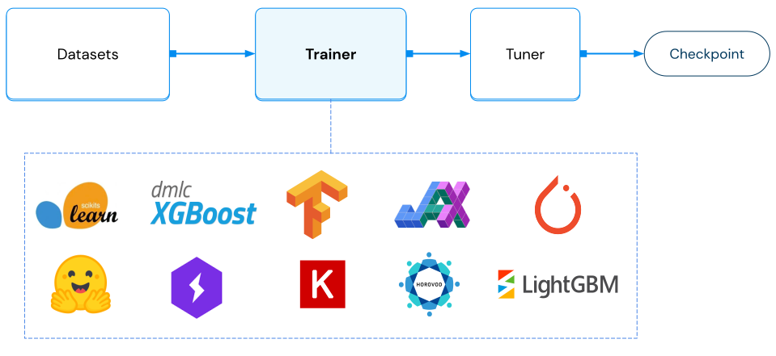

Using Trainers
Contents
Using Trainers#
Ray AIR Trainers provide a way to scale out training with popular machine learning frameworks. As part of Ray Train, Trainers enable users to run distributed multi-node training with fault tolerance.
Fully integrated with the Ray ecosystem, Trainers leverage Ray Data to enable scalable preprocessing
and performant distributed data ingestion. Also, Trainers can be composed with Tuners for distributed hyperparameter tuning.
After executing training, Trainers output the trained model in the form of
a Checkpoint, which can be used for batch or online prediction inference.
There are three broad categories of Trainers that AIR offers:
Deep Learning Trainers (Pytorch, Tensorflow, Horovod)
Tree-based Trainers (XGboost, LightGBM)
Other ML frameworks (Hugging Face, Scikit-Learn, RLlib)
Trainer Basics#
All trainers inherit from the BaseTrainer interface. To
construct a Trainer, you can provide:
A
scaling_config, which specifies how many parallel training workers and what type of resources (CPUs/GPUs) to use per worker during training.A
run_config, which configures a variety of runtime parameters such as fault tolerance, logging, and callbacks.A collection of datasets and a preprocessor for the provided datasets, which configures preprocessing and the datasets to ingest from.
resume_from_checkpoint, which is a checkpoint path to resume from, should your training run be interrupted.
After instantiating a Trainer, you can invoke it by calling Trainer.fit().
import ray
from ray.train.xgboost import XGBoostTrainer
from ray.air.config import ScalingConfig
train_dataset = ray.data.from_items([{"x": x, "y": x + 1} for x in range(32)])
trainer = XGBoostTrainer(
label_column="y",
params={"objective": "reg:squarederror"},
scaling_config=ScalingConfig(num_workers=3),
datasets={"train": train_dataset},
)
result = trainer.fit()
Deep Learning Trainers#
Ray Train offers 3 main deep learning trainers:
TorchTrainer,
TensorflowTrainer, and
HorovodTrainer.
These three trainers all take a train_loop_per_worker parameter, which is a function that defines
the main training logic that runs on each training worker.
Under the hood, Ray AIR will use the provided scaling_config to instantiate
the correct number of workers.
Upon instantiation, each worker will be able to reference a global Session object, which provides functionality for reporting metrics, saving checkpoints, and more.
You can provide multiple datasets to a trainer via the datasets parameter.
If datasets includes a training dataset (denoted by the “train” key), then it will be split into multiple dataset
shards, with each worker training on a single shard. All other datasets will not be split.
You can access the data shard within a worker via get_dataset_shard(), and use
to_tf() or iter_torch_batches to generate batches of Tensorflow or Pytorch tensors.
You can read more about data ingest here.
Read more about Ray Train’s Deep Learning Trainers.
Code examples
import torch
import torch.nn as nn
import ray
from ray import train
from ray.air import session, Checkpoint
from ray.train.torch import TorchTrainer
from ray.air.config import ScalingConfig
# If using GPUs, set this to True.
use_gpu = False
input_size = 1
layer_size = 15
output_size = 1
num_epochs = 3
class NeuralNetwork(nn.Module):
def __init__(self):
super(NeuralNetwork, self).__init__()
self.layer1 = nn.Linear(input_size, layer_size)
self.relu = nn.ReLU()
self.layer2 = nn.Linear(layer_size, output_size)
def forward(self, input):
return self.layer2(self.relu(self.layer1(input)))
def train_loop_per_worker():
dataset_shard = session.get_dataset_shard("train")
model = NeuralNetwork()
loss_fn = nn.MSELoss()
optimizer = torch.optim.SGD(model.parameters(), lr=0.1)
model = train.torch.prepare_model(model)
for epoch in range(num_epochs):
for batches in dataset_shard.iter_torch_batches(
batch_size=32, dtypes=torch.float
):
inputs, labels = torch.unsqueeze(batches["x"], 1), batches["y"]
output = model(inputs)
loss = loss_fn(output, labels)
optimizer.zero_grad()
loss.backward()
optimizer.step()
print(f"epoch: {epoch}, loss: {loss.item()}")
session.report(
{},
checkpoint=Checkpoint.from_dict(
dict(epoch=epoch, model=model.state_dict())
),
)
train_dataset = ray.data.from_items([{"x": x, "y": 2 * x + 1} for x in range(200)])
scaling_config = ScalingConfig(num_workers=3, use_gpu=use_gpu)
trainer = TorchTrainer(
train_loop_per_worker=train_loop_per_worker,
scaling_config=scaling_config,
datasets={"train": train_dataset},
)
result = trainer.fit()
import ray
import tensorflow as tf
from ray.air import session
from ray.air.integrations.keras import ReportCheckpointCallback
from ray.train.tensorflow import TensorflowTrainer
from ray.air.config import ScalingConfig
# If using GPUs, set this to True.
use_gpu = False
a = 5
b = 10
size = 100
def build_model() -> tf.keras.Model:
model = tf.keras.Sequential(
[
tf.keras.layers.InputLayer(input_shape=()),
# Add feature dimension, expanding (batch_size,) to (batch_size, 1).
tf.keras.layers.Flatten(),
tf.keras.layers.Dense(10),
tf.keras.layers.Dense(1),
]
)
return model
def train_func(config: dict):
batch_size = config.get("batch_size", 64)
epochs = config.get("epochs", 3)
strategy = tf.distribute.MultiWorkerMirroredStrategy()
with strategy.scope():
# Model building/compiling need to be within `strategy.scope()`.
multi_worker_model = build_model()
multi_worker_model.compile(
optimizer=tf.keras.optimizers.SGD(learning_rate=config.get("lr", 1e-3)),
loss=tf.keras.losses.mean_squared_error,
metrics=[tf.keras.metrics.mean_squared_error],
)
dataset = session.get_dataset_shard("train")
results = []
for _ in range(epochs):
tf_dataset = dataset.to_tf(
feature_columns="x", label_columns="y", batch_size=batch_size
)
history = multi_worker_model.fit(
tf_dataset, callbacks=[ReportCheckpointCallback()]
)
results.append(history.history)
return results
config = {"lr": 1e-3, "batch_size": 32, "epochs": 4}
train_dataset = ray.data.from_items(
[{"x": x / 200, "y": 2 * x / 200} for x in range(200)]
)
scaling_config = ScalingConfig(num_workers=2, use_gpu=use_gpu)
trainer = TensorflowTrainer(
train_loop_per_worker=train_func,
train_loop_config=config,
scaling_config=scaling_config,
datasets={"train": train_dataset},
)
result = trainer.fit()
print(result.metrics)
import ray
import ray.train as train
import ray.train.torch # Need this to use `train.torch.get_device()`
import horovod.torch as hvd
import torch
import torch.nn as nn
from ray.air import session, Checkpoint
from ray.train.horovod import HorovodTrainer
from ray.air.config import ScalingConfig
# If using GPUs, set this to True.
use_gpu = False
input_size = 1
layer_size = 15
output_size = 1
num_epochs = 3
class NeuralNetwork(nn.Module):
def __init__(self):
super(NeuralNetwork, self).__init__()
self.layer1 = nn.Linear(input_size, layer_size)
self.relu = nn.ReLU()
self.layer2 = nn.Linear(layer_size, output_size)
def forward(self, input):
return self.layer2(self.relu(self.layer1(input)))
def train_loop_per_worker():
hvd.init()
dataset_shard = session.get_dataset_shard("train")
model = NeuralNetwork()
device = train.torch.get_device()
model.to(device)
loss_fn = nn.MSELoss()
lr_scaler = 1
optimizer = torch.optim.SGD(model.parameters(), lr=0.1 * lr_scaler)
# Horovod: wrap optimizer with DistributedOptimizer.
optimizer = hvd.DistributedOptimizer(
optimizer,
named_parameters=model.named_parameters(),
op=hvd.Average,
)
for epoch in range(num_epochs):
model.train()
for batch in dataset_shard.iter_torch_batches(
batch_size=32, dtypes=torch.float
):
inputs, labels = torch.unsqueeze(batch["x"], 1), batch["y"]
outputs = model(inputs)
loss = loss_fn(outputs, labels)
optimizer.zero_grad()
loss.backward()
optimizer.step()
print(f"epoch: {epoch}, loss: {loss.item()}")
session.report(
{},
checkpoint=Checkpoint.from_dict(dict(model=model.state_dict())),
)
train_dataset = ray.data.from_items([{"x": x, "y": x + 1} for x in range(32)])
scaling_config = ScalingConfig(num_workers=3, use_gpu=use_gpu)
trainer = HorovodTrainer(
train_loop_per_worker=train_loop_per_worker,
scaling_config=scaling_config,
datasets={"train": train_dataset},
)
result = trainer.fit()
How to report metrics and checkpoints?#
During model training, you may want to save training metrics and checkpoints for downstream processing (e.g., serving the model).
Use the Session API to gather metrics and save checkpoints.
Checkpoints are synced to driver or the cloud storage based on user’s configurations,
as specified in Trainer(run_config=...).
Code example
import tensorflow as tf
from ray.air import session
from ray.air.checkpoint import Checkpoint
from ray.air.config import ScalingConfig
from ray.train.tensorflow import TensorflowTrainer
def build_model() -> tf.keras.Model:
model = tf.keras.Sequential(
[
tf.keras.layers.InputLayer(input_shape=(1,)),
tf.keras.layers.Dense(10),
tf.keras.layers.Dense(1),
]
)
return model
def train_func():
ckpt = session.get_checkpoint()
if ckpt:
with ckpt.as_directory() as loaded_checkpoint_dir:
import tensorflow as tf
model = tf.keras.models.load_model(loaded_checkpoint_dir)
else:
model = build_model()
model.save("my_model", overwrite=True)
session.report(
metrics={"iter": 1}, checkpoint=Checkpoint.from_directory("my_model")
)
scaling_config = ScalingConfig(num_workers=2)
trainer = TensorflowTrainer(
train_loop_per_worker=train_func, scaling_config=scaling_config
)
result = trainer.fit()
# trainer2 will pick up from the checkpoint saved by trainer1.
trainer2 = TensorflowTrainer(
train_loop_per_worker=train_func,
scaling_config=scaling_config,
# this is ultimately what is accessed through
# ``Session.get_checkpoint()``
resume_from_checkpoint=result.checkpoint,
)
result2 = trainer2.fit()
Tree-based Trainers#
Ray Train offers 2 main tree-based trainers:
XGBoostTrainer and
LightGBMTrainer.
See here for a more detailed user-guide.
XGBoost Trainer#
Ray AIR also provides an easy to use XGBoostTrainer
for training XGBoost models at scale.
To use this trainer, you will need to first run: pip install -U xgboost-ray.
import ray
from ray.train.xgboost import XGBoostTrainer
from ray.air.config import ScalingConfig
train_dataset = ray.data.from_items([{"x": x, "y": x + 1} for x in range(32)])
trainer = XGBoostTrainer(
label_column="y",
params={"objective": "reg:squarederror"},
scaling_config=ScalingConfig(num_workers=3),
datasets={"train": train_dataset},
)
result = trainer.fit()
LightGBMTrainer#
Similarly, Ray AIR comes with a LightGBMTrainer
for training LightGBM models at scale.
To use this trainer, you will need to first run pip install -U lightgbm-ray.
import ray
from ray.train.lightgbm import LightGBMTrainer
from ray.air.config import ScalingConfig
train_dataset = ray.data.from_items([{"x": x, "y": x + 1} for x in range(32)])
trainer = LightGBMTrainer(
label_column="y",
params={"objective": "regression"},
scaling_config=ScalingConfig(num_workers=3),
datasets={"train": train_dataset},
)
result = trainer.fit()
Other Trainers#
Hugging Face#
TransformersTrainer#
TransformersTrainer further extends TorchTrainer, built
for interoperability with the HuggingFace Transformers library.
Users are required to provide a trainer_init_per_worker function which returns a
transformers.Trainer object. The trainer_init_per_worker function
will have access to preprocessed train and evaluation datasets.
Upon calling TransformersTrainer.fit(), multiple workers (ray actors) will be spawned,
and each worker will create its own copy of a transformers.Trainer.
Each worker will then invoke transformers.Trainer.train(), which will perform distributed
training via Pytorch DDP.
Code example
# Based on
# huggingface/notebooks/examples/language_modeling_from_scratch.ipynb
# Hugging Face imports
from datasets import load_dataset
import transformers
from transformers import AutoConfig, AutoModelForCausalLM, AutoTokenizer
import ray
from ray.train.huggingface import TransformersTrainer
from ray.air.config import ScalingConfig
# If using GPUs, set this to True.
use_gpu = False
model_checkpoint = "gpt2"
tokenizer_checkpoint = "sgugger/gpt2-like-tokenizer"
block_size = 128
datasets = load_dataset("wikitext", "wikitext-2-raw-v1")
tokenizer = AutoTokenizer.from_pretrained(tokenizer_checkpoint)
def tokenize_function(examples):
return tokenizer(examples["text"])
tokenized_datasets = datasets.map(
tokenize_function, batched=True, num_proc=1, remove_columns=["text"]
)
def group_texts(examples):
# Concatenate all texts.
concatenated_examples = {k: sum(examples[k], []) for k in examples.keys()}
total_length = len(concatenated_examples[list(examples.keys())[0]])
# We drop the small remainder, we could add padding if the model
# supported it.
# instead of this drop, you can customize this part to your needs.
total_length = (total_length // block_size) * block_size
# Split by chunks of max_len.
result = {
k: [t[i : i + block_size] for i in range(0, total_length, block_size)]
for k, t in concatenated_examples.items()
}
result["labels"] = result["input_ids"].copy()
return result
lm_datasets = tokenized_datasets.map(
group_texts,
batched=True,
batch_size=1000,
num_proc=1,
)
ray_train_ds = ray.data.from_huggingface(lm_datasets["train"])
ray_evaluation_ds = ray.data.from_huggingface(lm_datasets["validation"])
def trainer_init_per_worker(train_dataset, eval_dataset, **config):
model_config = AutoConfig.from_pretrained(model_checkpoint)
model = AutoModelForCausalLM.from_config(model_config)
args = transformers.TrainingArguments(
output_dir=f"{model_checkpoint}-wikitext2",
evaluation_strategy="epoch",
save_strategy="epoch",
logging_strategy="epoch",
learning_rate=2e-5,
weight_decay=0.01,
no_cuda=(not use_gpu),
)
return transformers.Trainer(
model=model,
args=args,
train_dataset=train_dataset,
eval_dataset=eval_dataset,
)
scaling_config = ScalingConfig(num_workers=3, use_gpu=use_gpu)
trainer = TransformersTrainer(
trainer_init_per_worker=trainer_init_per_worker,
scaling_config=scaling_config,
datasets={"train": ray_train_ds, "evaluation": ray_evaluation_ds},
)
result = trainer.fit()
AccelerateTrainer#
If you prefer a more fine-grained Hugging Face API than what Transformers provides, you can use AccelerateTrainer
to run training functions making use of Hugging Face Accelerate. Similarly to TransformersTrainer, AccelerateTrainer
is also an extension of TorchTrainer.
AccelerateTrainer allows you to pass an Accelerate configuration file generated with accelerate config to be applied on all training workers.
This ensures that the worker environments are set up correctly for Accelerate, allowing you to take advantage of Accelerate APIs and integrations such as DeepSpeed and FSDP
just as you would if you were running Accelerate without Ray.
Note
AccelerateTrainer will override some settings set with accelerate config, mainly related to
the topology and networking. See the AccelerateTrainer
API reference for more details.
Aside from Accelerate support, the usage is identical to TorchTrainer, meaning you define your own training function
and use the Session API to report metrics, save checkpoints etc.
Code example
import torch
import torch.nn as nn
from accelerate import Accelerator
import ray
from ray.air import session, Checkpoint
from ray.train.huggingface import AccelerateTrainer
from ray.air.config import ScalingConfig
# If using GPUs, set this to True.
use_gpu = False
input_size = 1
layer_size = 15
output_size = 1
num_epochs = 3
class NeuralNetwork(nn.Module):
def __init__(self):
super(NeuralNetwork, self).__init__()
self.layer1 = nn.Linear(input_size, layer_size)
self.relu = nn.ReLU()
self.layer2 = nn.Linear(layer_size, output_size)
def forward(self, input):
return self.layer2(self.relu(self.layer1(input)))
def train_loop_per_worker():
accelerator = Accelerator()
dataset_shard = session.get_dataset_shard("train")
model = NeuralNetwork()
loss_fn = nn.MSELoss()
optimizer = torch.optim.SGD(model.parameters(), lr=0.1)
model, optimizer = accelerator.prepare(model, optimizer)
for epoch in range(num_epochs):
for batches in dataset_shard.iter_torch_batches(
batch_size=32, dtypes=torch.float
):
inputs, labels = torch.unsqueeze(batches["x"], 1), batches["y"]
output = model(inputs)
loss = loss_fn(output, labels)
optimizer.zero_grad()
accelerator.backward(loss)
optimizer.step()
print(f"epoch: {epoch}, loss: {loss.item()}")
session.report(
{},
checkpoint=Checkpoint.from_dict(
dict(epoch=epoch, model=accelerator.unwrap_model(model).state_dict())
),
)
train_dataset = ray.data.from_items([{"x": x, "y": 2 * x + 1} for x in range(200)])
scaling_config = ScalingConfig(num_workers=3, use_gpu=use_gpu)
trainer = AccelerateTrainer(
train_loop_per_worker=train_loop_per_worker,
# Instead of using a dict, you can run ``accelerate config``.
# The default value of None will then load that configuration
# file.
accelerate_config={},
scaling_config=scaling_config,
datasets={"train": train_dataset},
)
result = trainer.fit()
Scikit-Learn Trainer#
Note
This trainer is not distributed.
The Scikit-Learn Trainer is a thin wrapper to launch scikit-learn training within Ray AIR. Even though this trainer is not distributed, you can still benefit from its integration with Ray Tune for distributed hyperparameter tuning and scalable batch/online prediction.
import ray
from ray.train.sklearn import SklearnTrainer
from sklearn.ensemble import RandomForestRegressor
train_dataset = ray.data.from_items([{"x": x, "y": x + 1} for x in range(32)])
trainer = SklearnTrainer(
estimator=RandomForestRegressor(),
label_column="y",
scaling_config=ray.air.config.ScalingConfig(trainer_resources={"CPU": 4}),
datasets={"train": train_dataset},
)
result = trainer.fit()
RLlib Trainer#
RLTrainer provides an interface to RL Trainables. This enables you to use the same abstractions as in the other trainers to define the scaling behavior, and to use Ray Data for offline training.
Please note that some scaling behavior still has to be defined separately.
The scaling_config will set the number of
training workers (“Rollout workers”). To set the number of e.g. evaluation workers, you will
have to specify this in the config parameter of the RLTrainer:
from ray.air.config import RunConfig, ScalingConfig
from ray.train.rl import RLTrainer
trainer = RLTrainer(
run_config=RunConfig(stop={"training_iteration": 5}),
scaling_config=ScalingConfig(num_workers=2, use_gpu=False),
algorithm="PPO",
config={
"env": "CartPole-v0",
"framework": "tf",
"evaluation_num_workers": 1,
"evaluation_interval": 1,
"evaluation_config": {"input": "sampler"},
},
)
result = trainer.fit()
How to interpret training results?#
Calling Trainer.fit() returns a Result, providing you access to metrics, checkpoints, and errors.
You can interact with a Result object as follows:
result = trainer.fit()
# returns the last saved checkpoint
result.checkpoint
# returns the N best saved checkpoints, as configured in ``RunConfig.CheckpointConfig``
result.best_checkpoints
# returns the final metrics as reported
result.metrics
# returns the Exception if training failed.
result.error
# Returns a pandas dataframe of all reported results
result.metrics_dataframe
See the Result docstring for more details.